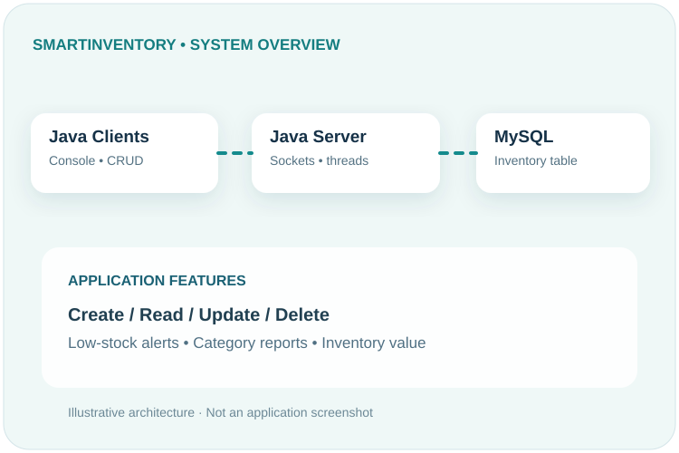
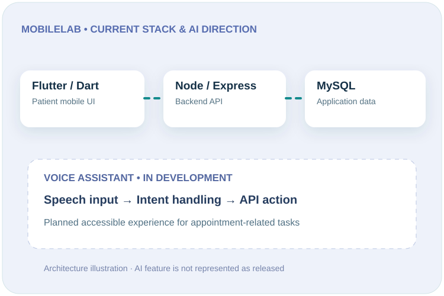
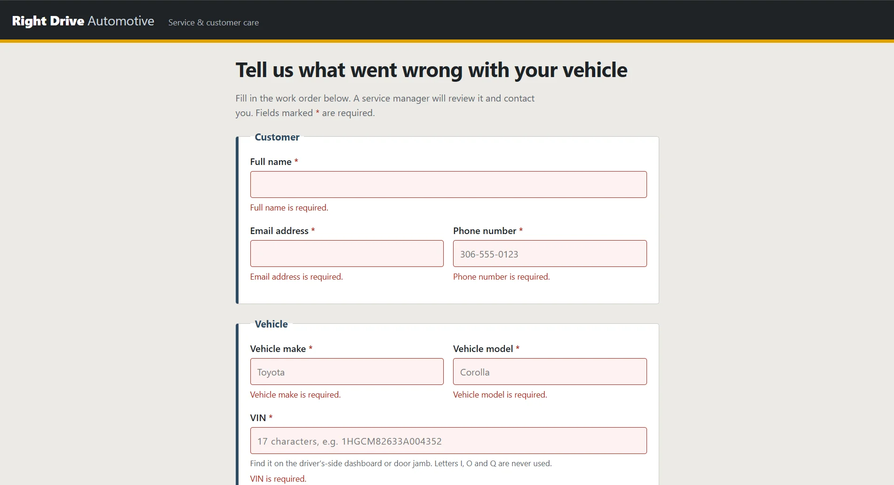
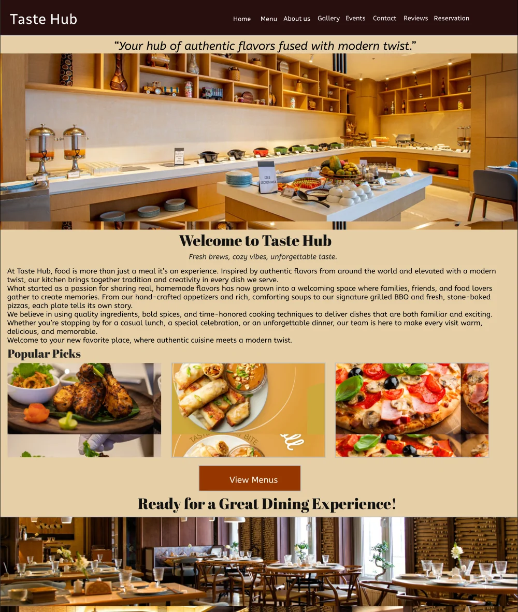

IT systems & support
Windows systems, desktop troubleshooting, hardware fundamentals, basic networking, and system configuration.
Evidence: IT Support certificate and coursework
I'm Aashish Shrestha, a Computer Systems Technology diploma student interested in IT support, troubleshooting, software development, and user-centred design. I enjoy making technology useful and approachable for the people who rely on it.
Systems · Web · Support · Collaboration
My path into technology combines formal training with practical customer-service experience. I am studying Computer Systems Technology at Saskatchewan Polytechnic, where I work with operating systems, networking concepts, databases, programming, and team-based technical assignments.
Before and during my studies, I worked in hospitality roles that taught me how to listen carefully, stay organized under pressure, document information accurately, and help people resolve problems. Those habits carry directly into the kind of IT support work I want to pursue.
My goal is to begin my career in IT support or service desk operations, continue building my technical depth, and grow toward broader systems and application support responsibilities. Outside of coursework, I enjoy exploring computer hardware, cooking, and playing soccer and cricket.
These are the technical areas I am learning and applying, along with the workplace skills developed through group projects and customer-facing roles.
Windows systems, desktop troubleshooting, hardware fundamentals, basic networking, and system configuration.
Coursework and project experience creating web applications, Java programs, SQL-backed systems, and user-interface concepts.
Customer support, accurate record keeping, working with peers, time management, and adapting to shifting priorities.
Google IT Support Professional Certificate · Google via Coursera · March 2026
Training in troubleshooting, customer service, operating systems, networking, and systems administration.
A selection of coursework and UX work that shows how I approach user needs, build practical workflows, collaborate with teammates, and explain technical decisions.

System architecture overview
A team-built inventory application that manages product records through a Java client connected to a server and MySQL database.
Client-server communication, database-backed CRUD operations, integration, and collaborative development.
The team developed an inventory application to organize product information and support common record-management tasks through a client-server workflow.
I worked with a three-person team on the coursework project and contributed to the inventory workflow and collaborative development of the Java and database-backed application.
The application connects a Java client to a server and uses JDBC to work with MySQL. The project focused on creating, reading, updating, and deleting inventory records and checking how the components work together.
The project brought programming, database operations, and integration work into one team application. It strengthened my understanding of multi-component software and the importance of checking data flow across each part.

Application architecture and voice-support concept
A healthcare mobile application intended to support appointment coordination and home-based care visits, with accessible voice support being explored for older users.
Backend/API integration planning and UX research for a voice-support experience.
MobileLab is a team capstone focused on helping patients coordinate appointments and home-based care services through a mobile application.
My current focus includes reviewing the backend/API integration path and researching how an AI voice assistant could make common tasks easier to navigate for older users.
I have been reviewing how the Flutter/Dart interface connects with the Node.js/Express API and MySQL data layer, while discussing integration responsibilities and voice-support flows with teammates.
The project is still in development. Current planning has helped clarify integration tasks and the voice-support experience to investigate next. The assistant is presented as planned work, not as a completed feature.

Local browser preview · required-field validation
A vehicle complaint booking application that collects customer contact details and vehicle information through a structured web form.
Form structure, client-side feedback, server-side validation, request handling, and local testing.
The project required a web form where customers could report a vehicle issue and provide the contact and vehicle details needed for follow-up.
I developed the complaint-form interface and the Node.js/Express submission workflow as part of the web development assignment.
I organized the form into customer and vehicle sections, added required-field checks, and used Express request handling with express-validator for validation. Helmet was included as security middleware, and I tested the form locally.
The screenshot shows the local form's validation feedback when required fields are incomplete. The project helped me connect a user-facing form with backend request handling and understand why input validation matters.

Homepage preview from the Taste Hub restaurant website
A restaurant website designed to introduce Taste Hub, showcase its food offerings, and help visitors find important information before visiting. The website brings together restaurant branding, menu discovery, food imagery, and visitor information in a consistent and welcoming experience.
Restaurant introduction, navigation for menu and gallery sections, featured dishes, food photography, customer reviews, contact information, and reservation pathways.
Taste Hub is a restaurant website project designed to give customers a clear and welcoming way to explore the restaurant. Its structure brings together the restaurant's identity, food offerings, menu, gallery, reviews, and visit information to make the website easy to navigate.
I worked on the website's visual direction, layout, and content organization. I planned the navigation and designed the main sections to introduce the restaurant, highlight its food offerings, and guide visitors toward useful information.
I used a warm cream, deep-brown, and orange colour palette to establish a welcoming restaurant identity. I organized the website around clear navigation, restaurant information, featured dishes, food imagery, and sections for visitors to explore the restaurant and plan a visit. Consistent styling and visual hierarchy help connect the different parts of the website.
The project resulted in a cohesive restaurant website design with an organized content structure and consistent visual identity. The homepage preview shown here is an example of the wider website, illustrating its branding, navigation, featured food, and overall presentation. This project helped me strengthen my understanding of website structure, visual hierarchy, and designing an online experience around visitors' needs.
My background combines technology coursework, a Google IT Support certification, and experience helping customers in fast-paced workplaces. I'm interested in entry-level service desk, IT support, and related junior technical positions.
If you'd like to discuss an IT support opportunity, a technical project, or my portfolio, email is the best way to reach me.
Regina, Saskatchewan, Canada
Open to connecting about entry-level IT opportunities and student projects.